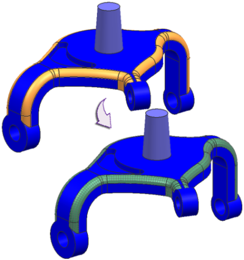
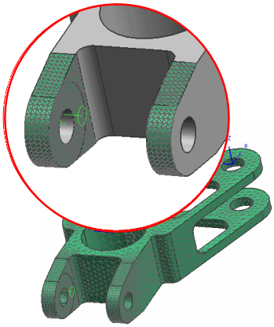

种子网格
种子网格是在实体部件选定面上应用的2D 网格，当您创建3D 网格时，种子网格将驱动该面上3D 单元的大小和节点位置，种子网格用于：
-
控制圆角以及圆柱面上的单元分配
-
在可映射的面上创建更规则的网格
-
控制局部单元长度

使用2D 网格作为种子网格生成3D 网格的工作流
-
在选定曲面上创建2D 网格
-
生成3D 网格
软件将使用2D 单元作为起始点(种子)以创建3D 单元。
要控制软件是否将网格导出到指定的求解器，使用2D 网格对话框中的将网格导出至求解器选项，如果只打算将2D 网格作为种子网格，清除这个复选框。
